CHEBFUN2 GUIDE 1: GETTING STARTED
A. Townsend, March 2013
Contents
1.1 WHAT IS A CHEBFUN2?
A chebfun2 is a function of two variables defined on a rectangle 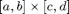. The syntax for chebfun2 objects is similar to the syntax for matrices in Matlab. Chebfun2 objects have many Matlab commands overloaded. For instance, trace(f) returns the sum of the diagonal entries when is a matrix and returns the integral of 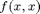 when is a chebfun2.
Chebfun2 builds on Chebfun, a well-established software system for univariate functions [Trefethen & others]. Chebfun was first released in 2004 [Battles & Trefethen], and Chebfun2 is the first extension of Chebfun to functions of two variables.
The implementation of Chebfun2 exploits the observation that many functions of two variables can be well approximated by low rank approximants. A rank 1 function is of the form 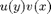, and a rank k function can be written as the sum of k rank 1 functions. Smooth functions tend to be well approximated by functions of low rank. Chebfun2 makes use of an adaptive procedure to automatically determine low rank function approximations by means of an algorithm that can be viewed as an iterative application of Gaussian elimination with complete pivoting [Townsend & Trefethen March 2013].
The underlying function representations are related to work by Carvajal, Chapman and Geddes [Carvajal, Chapman, & Geddes 2008] and others including Bebendorf [Bebendorf 2008], Hackbusch, Khoromshij, Oseledets, and Tyrtyshnikov.
1.2 WHAT IS A CHEBFUN2V?
Chebfun2 can represent scalar valued functions, such as 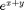, and vector valued functions, such as 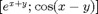. We represent vector valued functions as chebfun2v objects, and these are useful for performing vector calculus. For information about chebfun2v objects and vector calculus see Chapters 5 and 6 of this guide.
1.3 CONSTRUCTING CHEBFUN2 OBJECTS
A chebfun2 is constructed by supplying the Chebfun2 constructor with a function handle or string. The default rectangular domain of a chebfun2 is 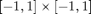. (An example showing how to specify a different domain is given at the end of this chapter.) For example, here is how to make a chebfun2 that represents on ![$[-1,1]\times[-1,1]$](guide1_eq23366.png) and then plot it.
and then plot it.
f = chebfun2(@(x,y) cos(x.*y)); plot(f), zlim([-2 2])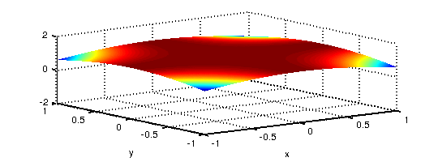
There are several different ways to plot a chebfun2, such as plot, contour, surf, and mesh. Here is a contour plot of :
contour(f), axis square
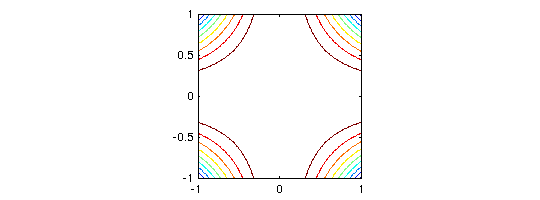 One way to find the rank of the approximant used to represent 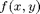 is the following:
length(f)
ans =
7
Alternatively, more information can be given by displaying the chebfun2 object:
f
f =
chebfun2 object: (1 smooth surface)
domain rank corner values
[ -1, 1] x [ -1, 1] 7 [0.54 0.54 0.54 0.54]
vertical scale = 1
The corner values are the values of the chebfun2 at 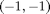, 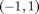, 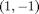, and 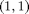, in that order. The vertical scale is used by operations to aim for essentially machine precision relative to that number.
1.4 BASIC OPERATIONS
Once we have a chebfun2 we can compute interesting quantities such as its definite double integral:
sum2(f)
ans = 3.784332281468732
We can compare this with the true answer obtained by calculus:
exact = 3.784332281468732
exact = 3.784332281468732
We can also evaluate a chebfun2 at a point 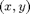, or along a line. When evaluating along a line a chebfun is returned because the answer is a function of one variable.
Evaluation at a point:
x = 2*rand - 1; y = 2*rand - 1; f(x,y)
ans = 0.998921453908142
Evaluation along the line 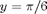:
f(:,pi/6)
ans =
chebfun column (1 smooth piece)
interval length endpoint values
[ -1, 1] 11 0.87 0.87
vertical scale = 1
There are plenty of other questions that may be of interest. For instance, what are the zero contours of 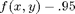?
r = roots(f-.95); plot(r), axis square, title('Zero contours of f-.95')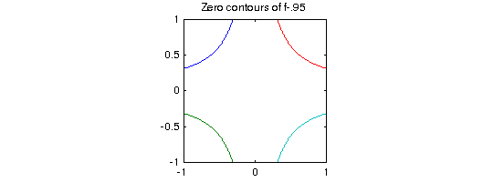
What is the partial derivative 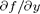?
fy = diff(f,1,1); plot(fy)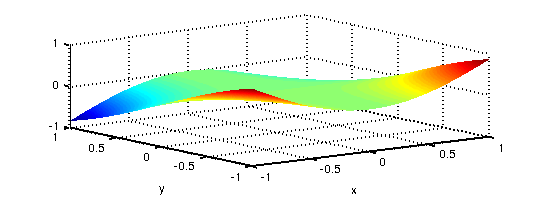
The syntax for the DIFF command can cause confusion because we are following the matrix syntax in Matlab. We also offer DIFFX(f,k) and DIFFY(f,k) which differentiate k-times in the first and second variable, respectively.
What is the mean value of on ?
mean2(f)
ans = 0.946083070367183
1.5 CHEBFUN2 METHODS
There are over 100 methods that can be applied to chebfun2 objects. For a complete list type:
methods chebfun2
Methods for class chebfun2: abs discriminant length pol2cart sum2 cdr display log potential surf chebfun2 ellipsoid max power surface chebpoly2 exp max2 prod surfacearea chebpolyplot feval mean quad2d surfc chebpolyplot2 flipdim mean2 quiver surfl chebpolyval2 fliplr median quiver3 svd complex flipud mesh rank tan conj fred meshc rdivide tand contour get meshz real tanh contourf grad min restrict times cos gradient min2 roots trace cosh horzcat minandmax2 sin transpose ctranspose imag minus sinh uminus cumprod integral mldivide size uplus cumsum integral2 movie sph2cart vertcat cumsum2 isempty mrdivide sphere volt dblquad isequal mtimes sqrt waterfall del2 isreal norm squeeze diag jacobian pivotplot std diff lap pivots std2 diffx laplacian plot subsref diffy ldivide plus sum
Most of these commands have been overloaded from Matlab. More information about a Chebfun2 command can be found with the help command; for instance
help chebfun2/max2
MAX2 Global maximum of a chebfun2
Y = MAX2(F) returns the global maximum of F over its domain.
[Y X] = MAX2(F) returns the global maximum in Y and its location X.
For high accuracy results this command requires the Optimization Toolbox.
See also MIN2, MINANDMAX2.
1.6 OBJECT COMPOSITION
So far, in this chapter, chebfun2 objects have been constructed explicitly via the command chebfun2(...). However, another useful way to construct new chebfun2 objects is by composing them together with operations such as '+', '-', '.*', and '.^'. For instance,
x = chebfun2(@(x,y) x, [-2 3 -4 4]);
y = chebfun2(@(x,y) y, [-2 3 -4 4]);
f = 1./( 2 + cos(.25 + x.^2.*y + y.^2) );
contour(f), axis square
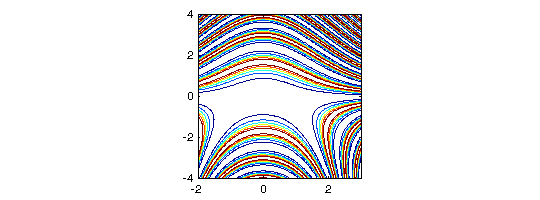 1.7 WHAT TO DO NOW
To find out more about Chebfun2 you can continue reading this guide, or have a look at the Chebfun2 Examples. This guide and the Chebfun2 Examples are written as publishable m-files. For example, you can publish this chapter of the guide by typing publish('guide1.m').
1.8 REFERENCES
[Battles & Trefethen 2004] Z. Battles and L. N. Trefethen, "An extension of Matlab to continuous functions and operators", SIAM Journal on Scientific Computing, 25 (2004), 1743-1770.
[Bebendorf 2008] M. Bebendorf, Hierarchical Matrices: A Means to Efficiently Solve Elliptic Boundary Value Problems, Springer, 2008.
[Carvajal, Chapman, & Geddes 2008] O. A. Carvajal, F. W. Chapman and K. O. Geddes, Hybrid symbolic-numeric integration in multiple dimensions via tensor-product series, Proceedings of ISSAC'05, M. Kauers, ed., ACM Press, 2005, pp.84-91.
[Townsend & Trefethen 2013] A. Townsend and L. N. Trefethen, An extension of Chebfun to two dimensions, submitted.
[Townsend & Trefethen March 2013] A. Townsend and L. N. Trefethen, Gaussian elimination as an iterative algorithm, SIAM News, March 2013.
[Trefethen & others] Chebfun Version 4.2, The Chebfun Development Team, 2011, http://www.maths.ox.ac.uk/chebfun/